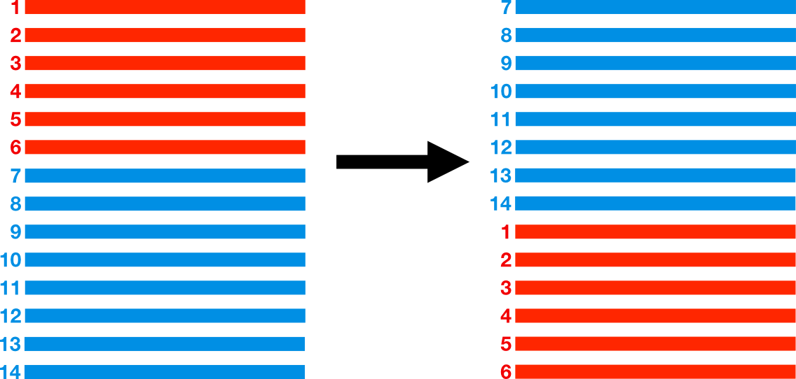
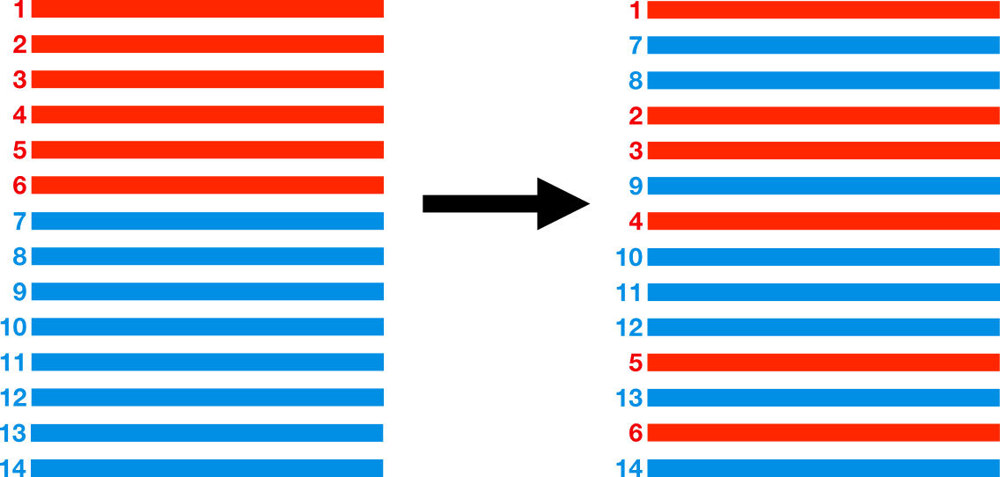

Carte mystère
Désireux de recruter un.e nouvel.le assistant.e, le célèbre mathémagicien Fubini (mondialement connu pour son prodigieux tour d'interversion des sommes et intégrales), publie une annonce dans le journal invitant les plus téméraires à venir relever un défi mathématique "digne de la magie noire !". Intrigué par cette alléchante proposition, vous sautez sur l'occasion et vous rendez aussitôt dans le manoir de l'excentrique personnage.
A votre arrivée sur les lieux, vous croisez le précédent candidat sortant de son entrevue visiblement perplexe, mais vous restez déterminé et entrez d'un pas décidé dans l'impressionante demeure. Après les politesses d'usage et quelques questions mathématiques auxquelles vous répondez sans difficulté, Fubini sort de sa poche un paquet de 32 cartes qu'il vous laisse examiner en détail. Les cartes sont numérotées de 1 à 32 et rangées dans l'ordre de 1 à 32 (1 sur le dessus, 32 sur le dessous) comme ci-dessous:
- 1
- 2
- 3
- 4
- 5
- 6
- 7
- 8
- 9
- 10
- 11
- 12
- 13
- 14
- 15
- 16
- 17
- 18
- 19
- 20
- 21
- 22
- 23
- 24
- 25
- 26
- 27
- 28
- 29
- 30
- 31
- 32
Il reprend alors le paquet de carte et effectue devant vous un mélange américain, puis ou coupe le paquet. Sans vous la montrer, il prend alors la carte sur le dessus du paquet, et la remet dans le paquet à un autre endroit. Puis il effectue un second mélange américain, suivi d'une coupe. A l'issu de ces opérations, il dispose les cartes en éventail devant vous, et vous met au défi de retrouver la carte qu'il a déplacée :
- 23
- 10
- 31
- 11
- 32
- 24
- 1
- 12
- 2
- 25
- 26
- 13
- 14
- 22
- 15
- 27
- 3
- 16
- 28
- 29
- 4
- 17
- 18
- 5
- 6
- 7
- 19
- 20
- 21
- 8
- 9
- 30
Quelle carte a été déplacée ?
Un peu de vocabulaire
Coupe
Effectuer une coupe sur un paquet de cartes consiste à diviser aléatoirement le paquet en 2 piles (pas forcément de même taille) puis mettre la pile de dessus en dessous.
Mélange américain
Effectuer une mélange américain sur un paquet de cartes consiste à diviser aléatoirement le paquet en 2 piles (pas forcément de même taille) puis entrelacer de manière aléatoire les cartes de chacun des paquets.
